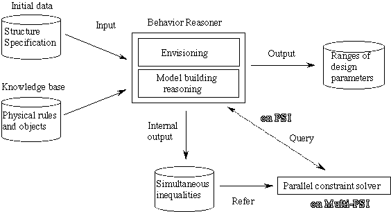

Machine: MultiPSI Environment: PIMOS, SIMPOS Language: ESP, KL1 Source Code: 4.0 MB Documents: Manual (Japanese)

Desq suggests valid ranges for design parameters in electronic circuits. The inputs to Desq from a designer are the structure of a circuit and the specification. Desq can determine design parameters in the circuit by using deep knowledge, which consists on the fundamental principles,like Ohms law,and basic function of components such as diodes and transistors. If the knowledge base is exchanged for the other domain except the electronic domain,Desq can deal with problems of the domain.